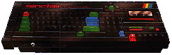

'Let me make sure I understand you correctly, Sir Clive. You followed up the Spectrum with the same machine again...'
'With a nice keyboard.'
'...with a nice keyboard, and followed that up with the same machine again, with twice the RAM and a sound chip.'
'And then you sold out to the enemy.'
'We couldn't afford to keep going!'
'Why was that? Could it be because you'd effectively released the same machine four times, ignoring the desperate cries for improved graphics capabilities, maybe some controller ports, a disk drive, perhaps? Could it because you turned down Nine Tiles, who designed the ROM, when they suggested ideas for a follow-up machine, because the existing machine was doing fine?'
'Alright! I confess! The death of the Spectrum was all my fault!'
'Come on, we're takin' you downtown.'
|

The proposed Super-Spectrum, Loki

Amstrad's CPC 464. Spot the difference.
|